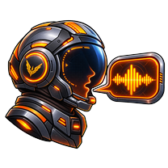
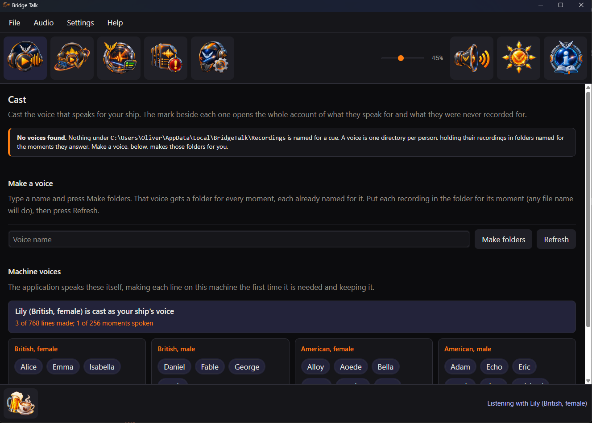
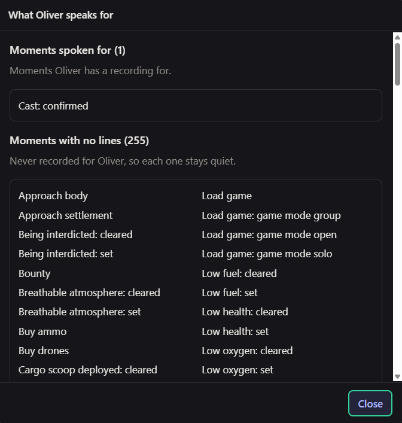
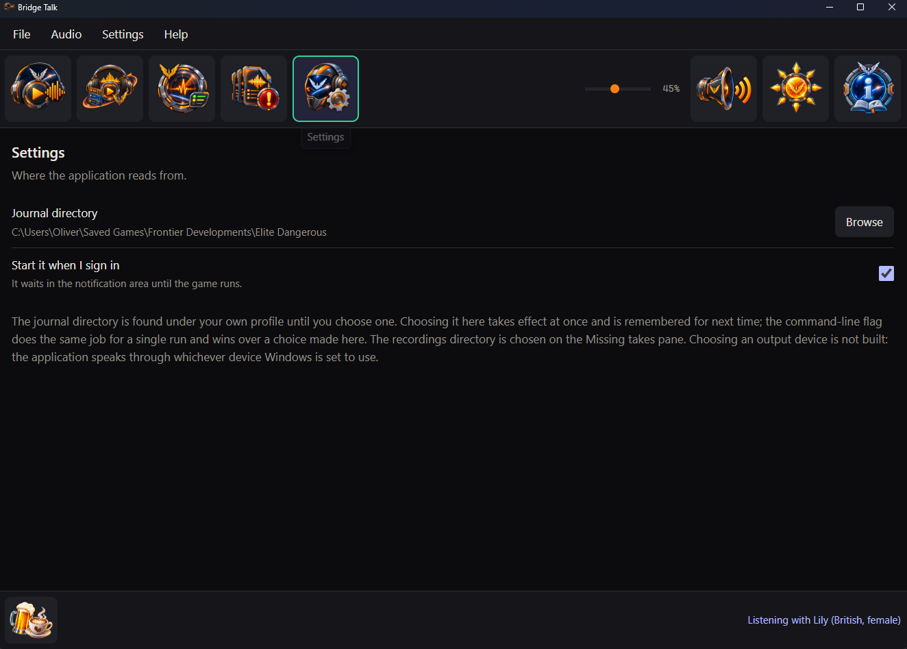
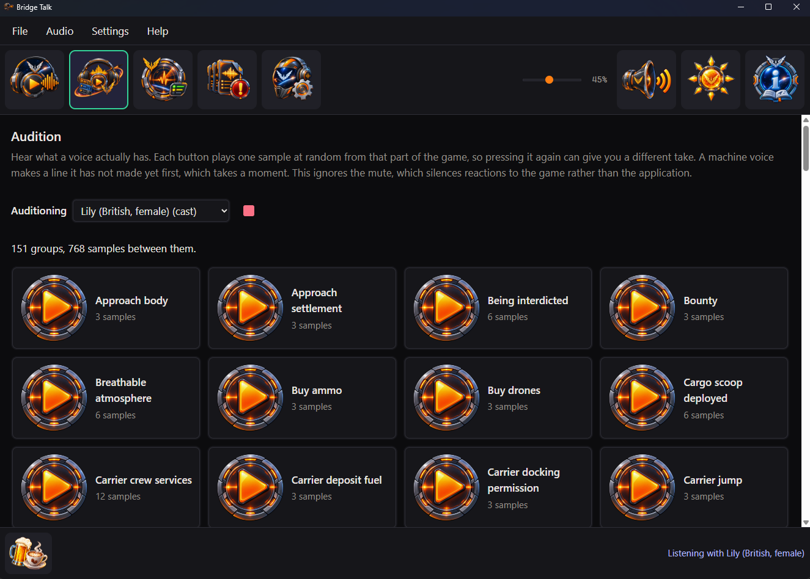
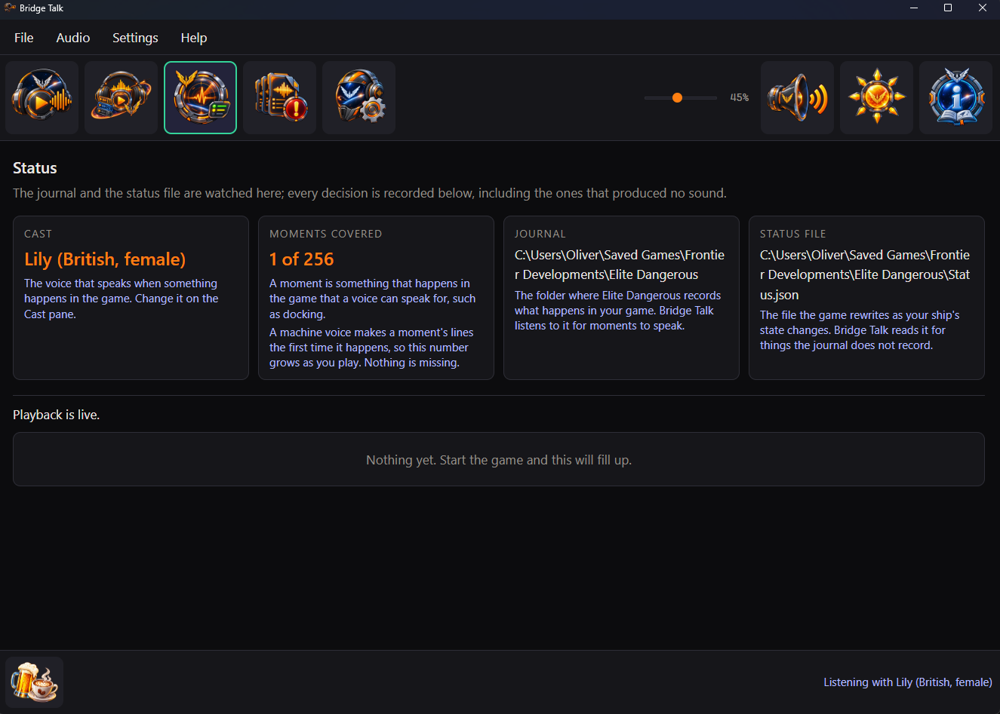
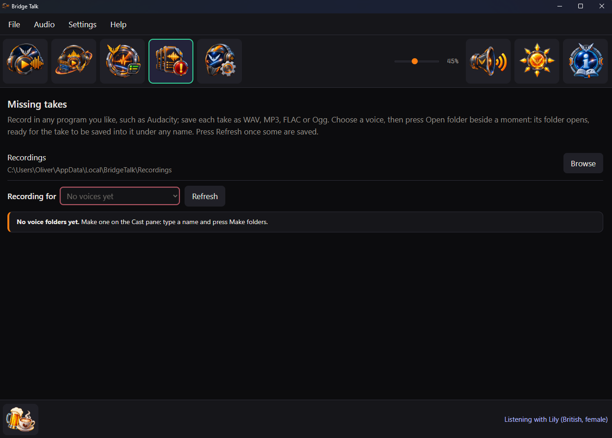

Bridge Talk
A ship's voice for Elite Dangerous
Pick one of 28 ready-made voices and your ship starts talking back as you play: docking, jumps, fuel, heat and danger. Or record a voice of your own, one line for every moment.
Free for Windows · waits quietly out of the way · talks, never listens

What your ship might say
A few of the lines the ready-made voices speak. Every moment has three to choose from.
Docking granted
We're cleared to land, commander.
Arriving in a new system
New system, commander.
Dropping out by a star
Right by the star. Mind the heat.
Reaching a planetary ring
We're in the ring. Watch the rocks.
Running low on fuel
We're running short on fuel, commander.
Coming under fire
Incoming fire, commander.
28 voices, ready when you are
No recording needed. Cast any of them and your ship has a voice straight away. Each one is made on your own computer, so nothing ever goes online.
British, female
- Alice
- Emma
- Isabella
- Lily
British, male
- Daniel
- Fable
- George
- Lewis
American, female
- Alloy
- Aoede
- Bella
- Heart
- Jessica
- Kore
- Nicole
- Nova
- River
- Sarah
- Sky
American, male
- Adam
- Echo
- Eric
- Fenrir
- Liam
- Michael
- Onyx
- Puck
- Santa
Not sure which? Listen to any of them on the Audition pane before you choose.
A voice that knows the ship
Bridge Talk follows the game while you play and answers each moment worth a word.
Ready to go
28 voices, British and American, female and male. Cast one and your ship starts talking.
Or a voice of your own
Record yourself, a friend or a whole crew. Bridge Talk makes a folder for every moment, already named.
256 moments
Docking, jumps, supercruise, fuel scooping, overheating, coming under fire and many more.
Knows what matters
An urgent warning cuts straight in. Everyday updates wait their turn and idle chatter gives way.
Never the same line twice running
Where a voice has more than one line for a moment, it picks a different one from last time.
Hear before you choose
The Audition pane plays any voice, chosen or not, one moment of the game at a time.
See what is left to record
The Missing takes pane lists every moment still waiting for a line, with when you will hear it.
Every silence explained
The Status pane shows what was said and why anything was not, so a quiet ship is never a mystery.
Out of the way
Put the window away and it keeps talking from the notification area. It can start when you sign in.
Talks, never listens
No microphone and no voice commands. Mute is one press away whenever you want quiet.
Your recordings stay yours
Bridge Talk never changes or removes a recording. Uninstalling leaves every one where it is.
Nothing goes online
Everything happens on your own computer. No account and nothing sent anywhere.
A folder for every moment
You never have to type a moment's name. Bridge Talk makes the folders for you; you fill them.
- Name your voiceType a name on the Cast pane and press Make folders.
- Record a lineUse any recording program you like, such as Audacity, which is free.
- Drop it inSave it in the folder for its moment. A folder can hold several takes.
- Press RefreshYour voice appears on the Cast pane, ready to cast.

Five panes, one job each
Cast, Audition, Status, Missing takes and Settings sit along the top of the window.




Do I have to record anything?
No. Bridge Talk comes with 28 ready-made voices, British and American, female and male. Cast one on the Cast pane and your ship starts talking.
Does it need the internet?
No. The ready-made voices are made on your own computer and Bridge Talk never goes online. The Donate button simply opens your web browser.
Can I use my own voice?
Yes. Type a name on the Cast pane and press Make folders: you get a folder for every moment, already named. Record each line in any program you like, drop it in its folder and press Refresh.
Does it listen to me?
Never. There is no microphone and there are no voice commands. Bridge Talk only speaks.
Will it talk over itself?
Only when it matters. An urgent warning cuts in over anything less important; everyday updates wait their turn and idle chatter gives way. Mute silences it whenever you like.
What happens to my recordings if I uninstall?
Nothing. Bridge Talk never changes or removes your recordings, whether you uninstall or not.
Which computers does it run on?
Windows. It installs just for your own account, so it never asks for administrator permission.
Is it free?
Yes. Bridge Talk is free and open source. There is no paid tier and nothing held back behind a donation.
Download Bridge Talk
One setup program installs everything, the ready-made voices included.
Version 1.0.0Windows
For your own Windows account
Download for WindowsRun it and choose a Start Menu entry, a Desktop shortcut or starting when you sign in. A newer one updates it; the same one repairs or uninstalls it.
Supporting Bridge Talk
Bridge Talk is free and stays free. There is no paid tier, no licence key and no feature held back behind a donation. If it has made your ship better company, a contribution supports its maintenance and continued development.
 Donate
Donate